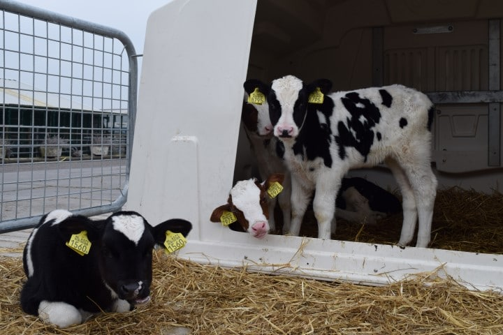

Boerderij Bouwlust stamt uit de 18e eeuw. Sinds 1821 woont familie de Vette op de boerderij en is de locatie al bijna 200 jaar oud.
Al generaties lang gaat de boerderij van vader op zoon. In 1965 werd zoon Piet de Vette boer.
Toen zijn oudste zoon Quirien van de landbouwschool afkwam werd een maatschap gevormd.
Samen met zijn vrouw Wil werd hij in 1999 eigenaar. Sindsdien hebben Quirien en Wil de Vette de boerderij langzaam getransformeerd tot een bourgondische locatie voor feesten,
activiteiten en ontspannen overnachten. Hun zoon Peter, alweer de zevende generatie De Vette's, zet deze ontwikkeling vol enthousiasme door.
Samen met zijn ouders en partner ontplooit hij elk jaar weer nieuwe initiatieven om te zorgen dat Hoeve Bouwlust voorop blijft lopen.